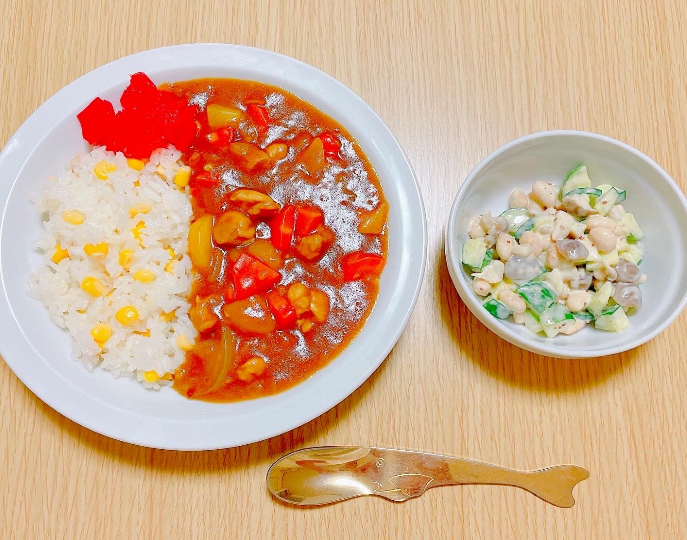
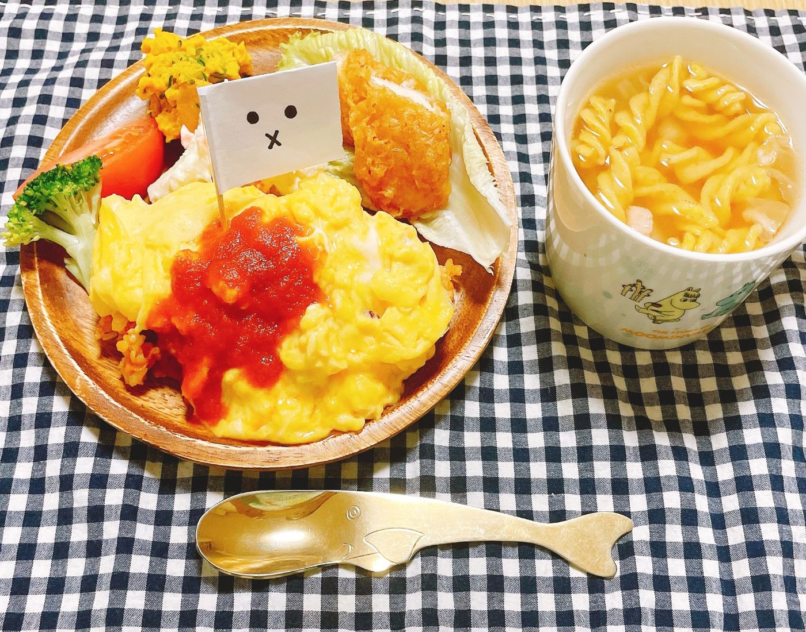
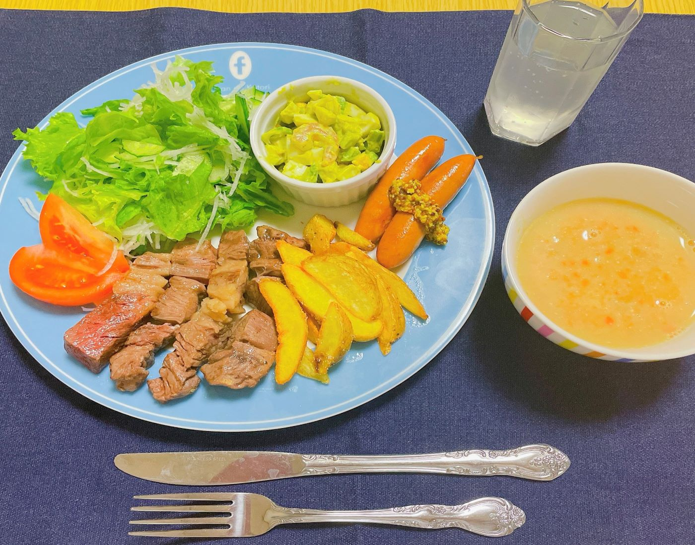
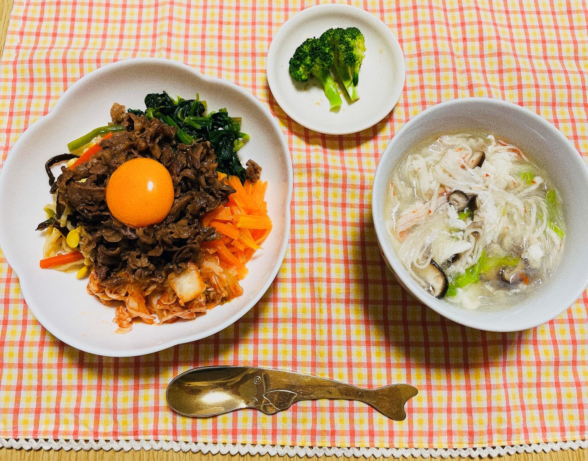
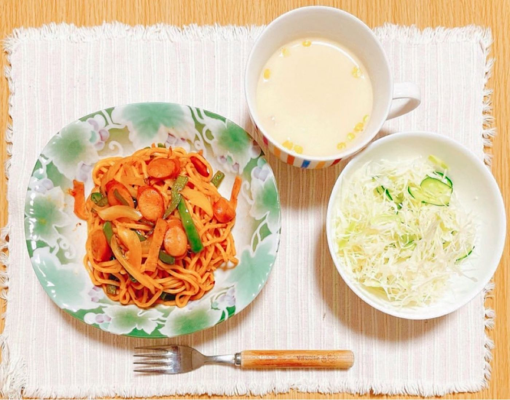
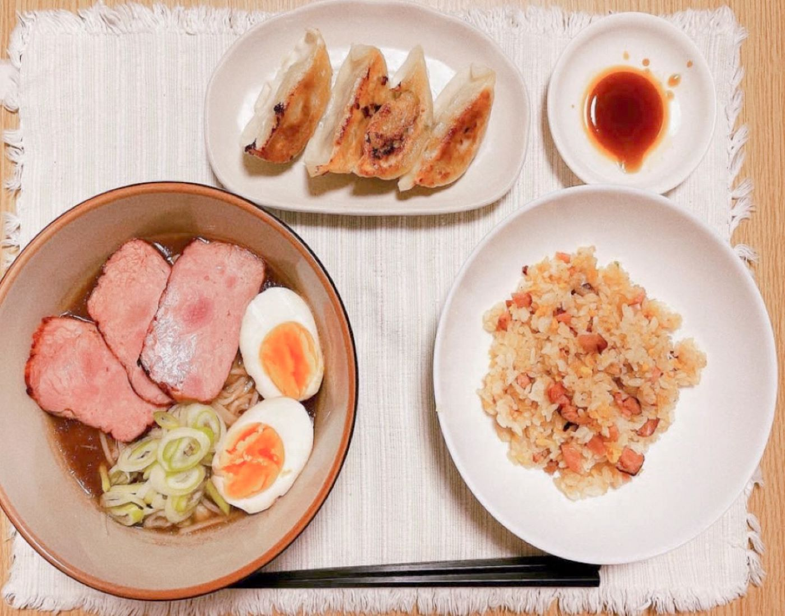

MENU
メニュー
-

- カレーライス
- チキンカレーライス/大豆のサラダ
コーンと炊き込んだごはんと玉ねぎペーストをベースにしたカレールーとの相性は抜群です。
-

- 大人様プレート
- オムライス/チキンカツ/
かぼちゃサラダ/コンソメスープ ふわふわたまごのオムライスにいろいろなおかずがつまったスペシャルな夜ごはん
-

- ワンプレートごはん
- カットステーキとウインナーの
盛り合わせ/アボカドサラダ/
さつまいもとにんじんのポタージュ 国産カットステーキとマスタードソース付きのウインナーでがっつりメニュー
-

- ビビンバ丼
- ビビンバ丼/中華スープ しっかりと味付けをしたお肉とナムルとキムチに黄身を乗せて、完成。
-

- ナポリタン
- ナポリタン/コーンスープ/サラダ 太麺に絡んだケチャップソースがおいしい。
-

- 徳島ラーメン
- 徳島ラーメン/チャーハン/餃子 見た目ほど濃すぎない味が癖になる。ラーメン×チャーハン×餃子◎。